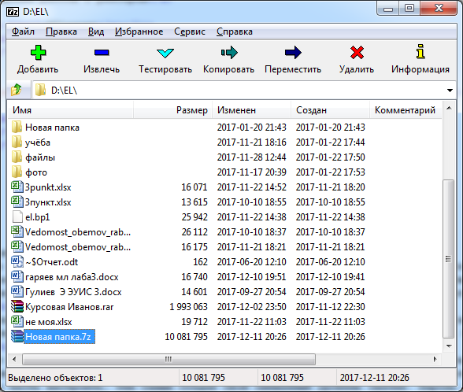
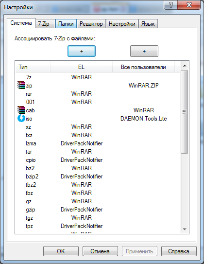

7-zip - свободный файловый архиватор с высокой степенью сжатия данных. Поддерживает несколько алгоритмов сжатия и множество форматов данных, включая собственный формат 7z c высокоэффективным алгоритмом сжатия LZMA.
Главное окно архиватора 7-zip выглядит существенно просто и минималистично. Самые стандартные операции строго перед глазами.
А на дисплее отображается не менее полезная информация про диски, папки, файлы. Для такие как файловая система, емкость, размер кластера и сколько пространства свободно.
Опрубуем не менее важную функцию данного архиватора - тестирование архивов. Весьма полезная операция на случаи, если архивы имеют некие повреждения. Тестирование высчитывает количество папок и файлов в архиве, объемы памяти и проверяет на наличие ошибок. В данном случае наш архив не имеет никаких ошибок:
Перейдем к оперции добавления архива. Попробуем создать архив папки с фотографиями "Новая папка". Перед нами открывается окно с выбором настроек. Формат архива оставим 7z, поставим маскимальный уровень сжатия. При выборе уровня сжатия, остальные настройки по сжатию файлов высталяются автоматически, при желании можно отдельно каждую часть настроить, тем самым создав свой смешанный уровень сжатия. Пароль ставить не будем. Так же можно выделить некоторые опции такие как удалять файлы после сжатия или сжимать открытые для записи файлы. Можно выбрать пути к файлам, оставим относительные пути. Так же можно задать параметры(задав некоторое описание) и шифровать имена файлов, доступен только один метод шифрования. И можно разбить на тома:
Появляется окно содержащий информацию про сжатию папки в режиме реального времени. И следовательно результат, архив появился:

Переместим папку в диск D и извлечем. Всё довольно просто, при выборе операции переместить открывается окно, где нужно указать путь, куда переместить архив. Затем просто нажимаем извлечь и в следующем окне извлечения можно указать путь распаковки, пароль при необходимости, устанавливать права доступа:
Из визуальных настроек можно изменять вид на дисплее. В правке много функций по выделению файлов. Еще можно составлять избранные архивы, файлы:
В настройках можно ассоциировать файлы с 7-zip. Предоставляется огромный выбор языков. Можно настроить элементы контекстного меню:

Достоинства 7-zip:
Недостатки 7-zip:
Подробную информацию вы можете прочитать на форуме: http://vox.mannet.ru
А так же на официальном сайте разработчиков: http://www.7-zip.org/